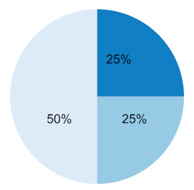

Here, we will learn ways to stay involved in activism, educate ourselves, and create change within our
communities.
Education and self education is crucial in activism. As activists, we should always be committed to learning.
And we should
understand that there are many ways to educate ourselves! There is no singular valid form of education.
Let’s talk about it.
Educating Yourself
Before diving into activism, you must learn about history and language related to that issue.
Even if you already have a framework of relevant information and perspectives, it will benefit you to
browse a few sources as you get started.
An easy place to begin this learning is online! Use the internet to find a range of resources: artwork,
literature,
articles, movies, videos, and more. You should also try to find a range of perspectives on the issue.
Next, ask family, friends, neighbors, teachers, and other people you have access to about the issue. You
should not only
look to "experts" for guidance. Of course, it is important to look to people who have spent
significant time diving into the issue. However, they are not the only people you should get
information from. There should not be a criteria
for who has the ability to share valuable knowledge and teach others. Decolonize your mindset by looking to
different people from different backgrounds for knowledge.
Talk to people affected by the issue and see what they think, feel, and share. Talk to family and friends to
contextualize the issue and understand how it affects (or does not affect) those in your immediate circles.
Talk to people you do not know very well about the issue! It is never helpful to limit yourself to the same
group of people.
Sharing with and listening to different kinds of people should not be an extraordinary task. Normalize
conversations
with a (racially, religiously, economically, etc) diverse range of people as you learn.
Social media is another great place to learn about the issue you want to focus on.
However, it would be wise to fact check the information you find on social media via a reliable source:
newspaper, teacher,
internet archive, etc.
Social media is a great place to interact with people from different backgrounds because it is accessible to
so many different people.
Just stay away from using social media as your only source of information.
It is best to look at a variety of sources as you learn.
Make sure your process of education includes learning about government as well. There are local, state, and
national levels of the government.
Make sure you know the congressperson for your district. Local officials are often overlooked by those
searching for change. Every level of the government has a role
and needs to be included in your research. Make sure you know about judges, lawmakers, senators, law
enforcement leaders in your state.
There are many levels to look at. It would be best to start by looking at what has been going on so far
related to the issue you are focusing on. Look at
the track records of officials in terms of addressing the issue. Local officials have influence too and
local government can be the starting point or focus of your activism to
create concrete changes. There is revolutionay change necessary to get our countries to the ideal condition
for everyone. In order to create this change,
we must still work to understand the past. We must work to understand existing structures, processes, and
institutions. Then we must apply that knowledge
to create change.
Here are some places to learn online
Ground Yourself
Here are some helpful terms to keep in mind throughout your self-education process:
- Ally: takes action to help and understand members of a marginalized group
- Advocate: acts on behalf of others, gives a voice, speaks up for a cause
- Co-Conspirator: helps to plan and act on a goal
- Activist: someone who works to bring attention and action, actively speaking up and working toward a
goal
- Accomplice: someone who is an ally, then actually shows up, taking part of the risk away when you have
more privilege
- Collaborator: partnership in taking action, raising awareness, planning, etc
Hopefully, you can see yourself taking some the actions covered under the roles above. Those roles are
helpful to consider
so that you can see different forms and varying levels of action that can be taken to support a cause.
In addition to those different roles, each person has different talents and passions that can be applied to
their method of activism.
Activism can take shape through your music, artwork, writing or filmmaking. Pair your interests with your
activism in order to create
a productive, engaging, and thoughtful project that can help create change within your community.
Recognizing Privilege
Privilege: “a special right, advantage, or immunity granted or available only to a particular person or
group.”
Remember, having a privilege doesn’t mean that you do not experience challenges or oppression due to another
part of your identity.
Most of us have some kind of privilege to reflect on.
Another reminder: If you have less privilege due to an identity, it is NOT your job to educate others with
more privilege in that area.
For example, if you are Black, do not feel pressured to educate a white person about allyship at the expense
of your well being.
Remind others about the power of the internet and tell them you are not up to educating them at the moment!
When approaching activism, it is very important to acknowledge and reflect on your privileges in life.
A privilege could be connected to any core identifier: gender, ability, race, age, religion, ethnicity,
sexual orientation, socio-economic status/class, etc. Being cisgender is a privilege related to gender to
acknowledge and reflect on. Being white is a privilege related to race to acknowledge and reflect on. Being
able to hear and see without any significant challenge is a privilege related to ability to acknowledge and
reflect on.
Reflecting on your privilege occurs after acknowledging your privileges. Think about what your privilege
means to you, how it benefits you, and how it affects others. Here are some helpful questions to ask: What
do I have because of this privilege? What does this privilege mean to others when we interact? How can I use
this privilege to help others? What structures make sure I have this privilege and others do not? When has
this privilege allowed me to overlook the needs of others? Am I ever defensive or uncomfortable when others
bring up this privilege? Talk to others that share your privilege about how you can be helpful to others
that do not share the privilege. Listen to others that do not share your privilege and hear what they have
to say. Remember not to expect others without your privilege to explain things for you or answer all of your
questions. That is your job, not theirs. You have to be flexible and look to many different places and
people as you reflect on your privilege.
After reflecting, apply the knowledge you have gained to create change and join others. When you are a more
privileged member of a group, take more time to listen or use your privilege to help the group’s activism.
Now that you have been reflecting on your own privilege, you can give others guidance to do the same. Use
your voice to challenge others with similar privileges to join and amplify activist efforts. Accept
criticism and use it to do better moving forward. You are committing to a lifelong process of learning, no
one can understand everything about privilege and activism after one week of learning or one epiphany. If
the privilege you identify and reflect on does not significantly relate to your activism, you can still use
this process to remain self reflective and self challenging.
Collaboration
Here are some components to keep in mind when forming an alliance:

50% Getting to know them and their story |
25% How can you collaborate with together? |
25% Sharing your story
It is important to keep in mind that there is strength in numbers.
Gaining support from others to amplify your effort is crucial.
We need to rally our communities and our allies alongside us when engaging in activism.
Brainstorm a list of student groups at your school to reach out to as you start an effort.
Reach out to friends and family and see what they can do to help you. Organize time to reach out to create
alliances.
Once you determine who your allies are, you can find a way to take action with their support.
Don’t limit yourself or make assumptions when looking for allies.
After you interact with someone, spend time speaking with them, you can judge how willing they are to
amplify your efforts and support a cause.
It is helpful to work with a group to create change.
One voice and mind can do a lot but you need others in the room with you as in order to create a game plan
and take action.
As an activist, you are likely feeling extremely energized, creative, and motivated.
However, it is limiting and possibly detrimental to your effort to seek change alone.
A group with multiple voices will allow you and your fellow activists to challenge each other and take
action in a more effective manner.
It is also more effective to approach others with a group rather than alone.
More voices can mean more impact. Organize yourselves and set some ground rules for the team so that
responsibilities are distributed.
Set your goals. Make sure that members of the group are all ready to pitch in and ready to support the goal.
Self Care
Activist burnout is real! Many of the problems we are focusing on as activists are maintained by centuries
old structures. These problems won’t disappear in a day, or even a few years. As Bryan Stevenson said,
“Hopelessness is the enemy of justice.” In order to keep our hope intact and stay energized through our
lifelong commitment to activism, we must continue to take time to rejuvenate, heal, and reflect.
Here are some self care strategies that can be incorporated into your daily routine:
-
Mindfulness Meditation: Spotify has a guided meditation playlist available and you can find lots of free
guided meditations on youtube.
-
Yoga: physical, mental, and spiritual practices or disciplines which originated in ancient India. Keep
in mind that yoga has been whitewashed and is practiced by communities in which it did not originate. It
would be wise to educate yourself and/or find a yoga program that includes education about the origins
and full methodology behind yoga. Look up articles on the white washing of yoga and how practicing yoga
can be cultural appropriation in order to find ways to practice in a respectful manner and go through a
complete learning process.
Here is a recommended article about the whitewashing of wellness: click
here
Yoga Teachers of Color (list from Yogawalla): click here
-
Fill your feed with self care tips and resources: There are SO MANY resources for self care and wellness
on social media and the internet. You can find daily quotes, wellness advice, information on upcoming
events, and more. Use social media and online communities to get access to resources that can help you.
Ethel’s Club
Self Care 4 You Instagram Account
Info on
Black Mental-Health and Wellness Resources
Self Care Resources (from POC Online
Classroom)
-
Take a Minute Away from Your Feed: It can be helpful to schedule some social media breaks for yourself.
You could limit your time on social media to a certain part of the day. You could delete your social
media apps for a couple of weeks. See what works for you! It is extremely helpful to take some time
away.
-
Connect with Others: Speaking to others and being open about your emotions, thoughts, etc is a very
important skill. Confide in a trusted friend, loved one, or therapist and seek advice about anything on
your mind. Going to therapy is something we can all benefit from. If possible, try to schedule a meeting
with a therapist. Remember, you don’t need to be “struggling” to see a therapist or ask a loved one for
help (#DestigmatizeMentalHealth). You should normalize sharing with others and being vulnerable in your
life. Everyone has mental-health needs and should be reaching out to someone for help on a consistent
basis.
Consumer Power
As a consumer, you have power. What you buy matters! What you tell others to buy matters! Research all the
companies that own the products you use: clothing, skincare, school supplies, etc. It doesn't take
much time to find more information! Many of the companies you buy from probably support and fund
organizations and institutions
that you are advocating against. All I can say is: research, research, research! You should look at all the
places
you buy from and products you use!
By buying products from a company that funds something you see as wrong, you are supporting them in their
wrongdoing.
In our society, money talks. If a large enough group of consumers speak against a company's actions and
boycott a product,
that company will have to be receptive to their demands. After you find out what the companies you support
stand for,
you can take action.
- Diversify your supply: buy from POC-owned businesses. Don't buy from companies that appropriate other
cultures.
If you find that your products mostly come from. Through your shopping choices, you can have a tangible
role in supporting groups that have been marginalized.
companies run by white people, you should look for some other businesses to buy from.
- Boycott and Publicly Call Out Companies: Boycott companies that are acting against the causes you
believe in.
Reach out to anyone you know and share what you have learned to mobilize others. Your individual actions
can be used to motivate others to join you. Gather others to reach out to companies on social media
and put pressure on them to support the revolutionary changes our world needs.